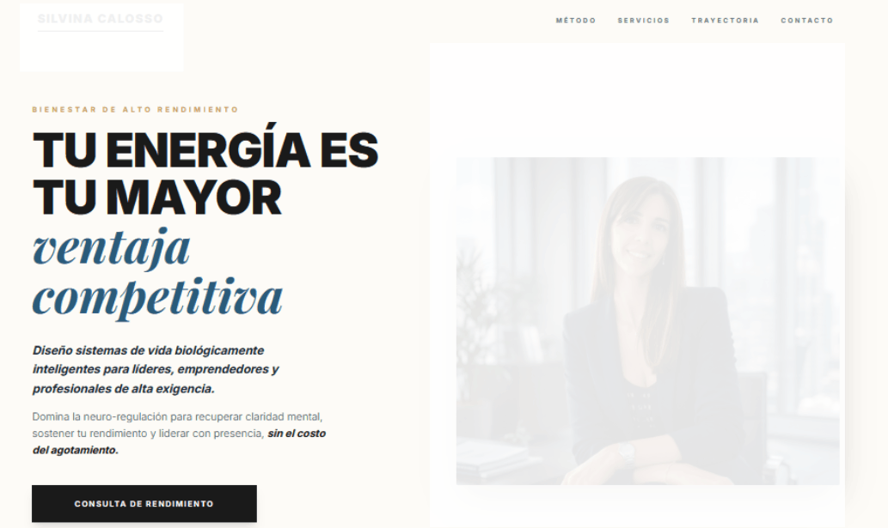
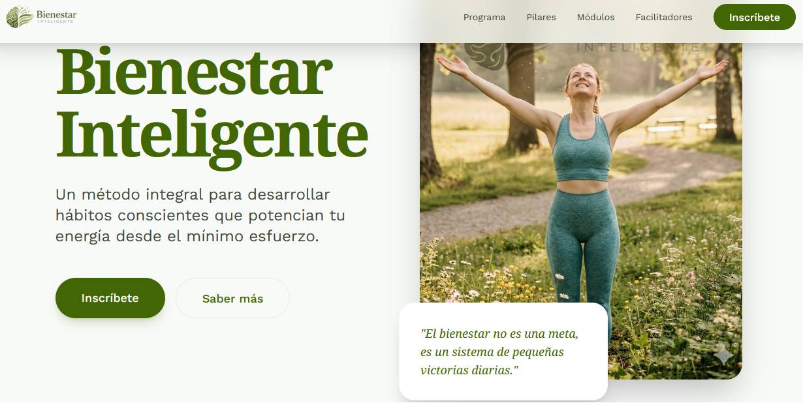
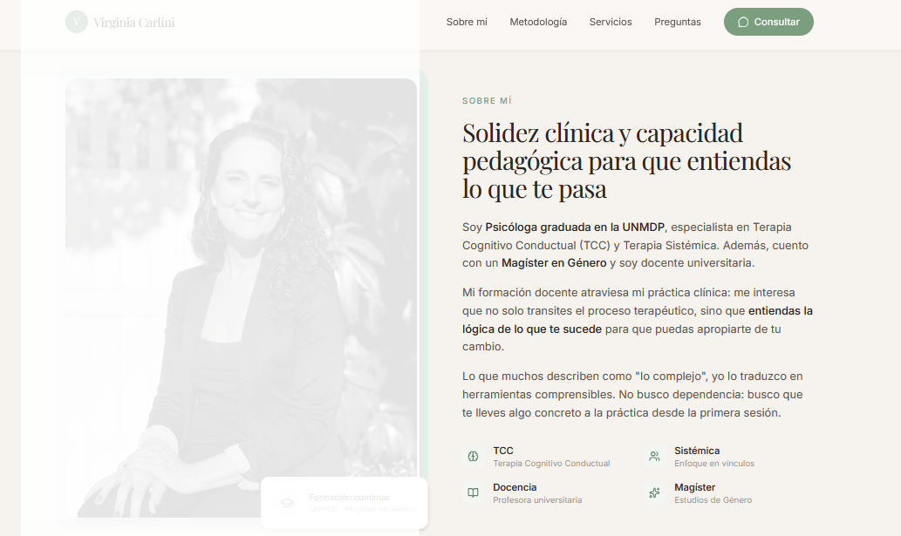

Ayudo a profesionales a simplificar el caos tecnológico para que puedan enfocarse en lo que mejor saben hacer: acompañar personas.
Diseño Humano
Tecnología con alma
Detrás de cada web hay una historia, una vocación y alguien que quiere ayudar.
No vendo tecnología. Construyo puentes entre lo que sos y quienes te necesitan. Saco lo técnico del medio para que tu esencia pueda mostrarse sin fricción.
Antes
Después
Sin vueltas, sin tecnicismos. Así funciona.
Entiendo tu idea, tu vocación y lo que querés lograr. Sin formularios, sin presión.
Le damos forma clara. Ordenamos todo en un plan concreto y sin sorpresas.
Lo hacemos realidad en pocos días. Tu presencia online, funcionando.
Proyectos reales de profesionales del bienestar

📸 Web de CoachWeb personal · Coach
De idea desordenada a presencia clara en días

📸 Landing de TallerLanding page · Taller de Bienestar
Diseñada para convertir interesados en alumnos inscriptos

📸 Web de PsicólogaWeb profesional · Psicóloga
Aumentando visibilidad y llegando a más pacientes de manera digital
Ahora tengo claridad y una web funcionando. Dejé de sentir que internet era un problema y empecé a sentirlo como una oportunidad.
— Cliente real
Coach · Argentina
No será una llamada de ventas. Será una charla entre personas para ver si encajamos.